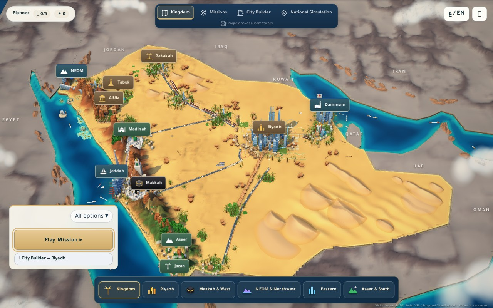
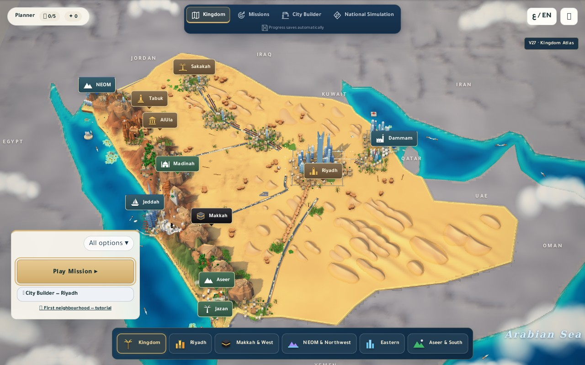
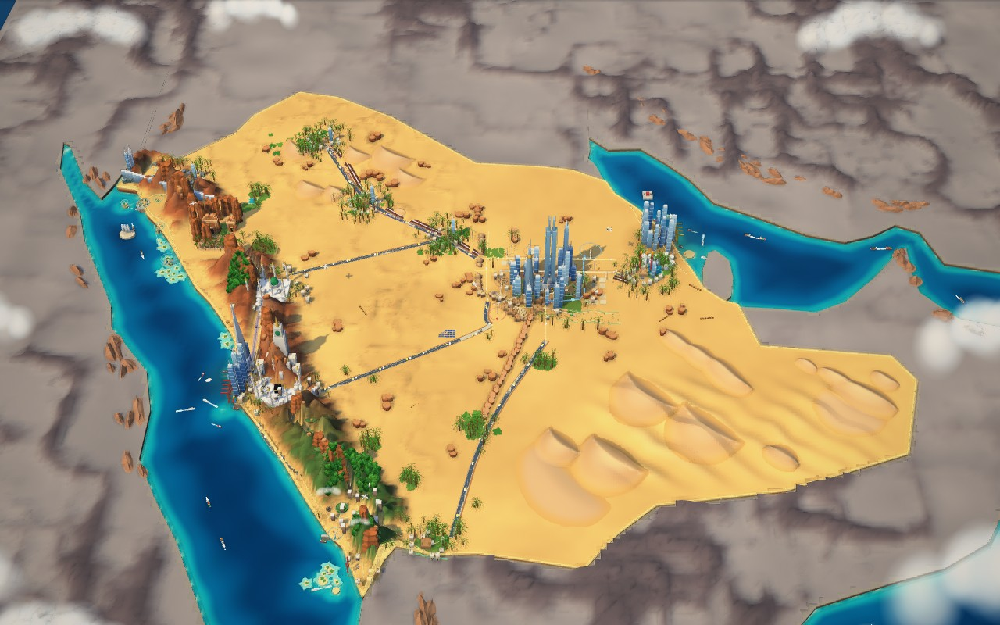
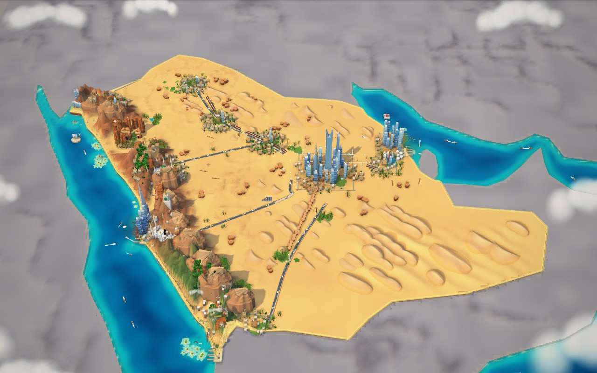
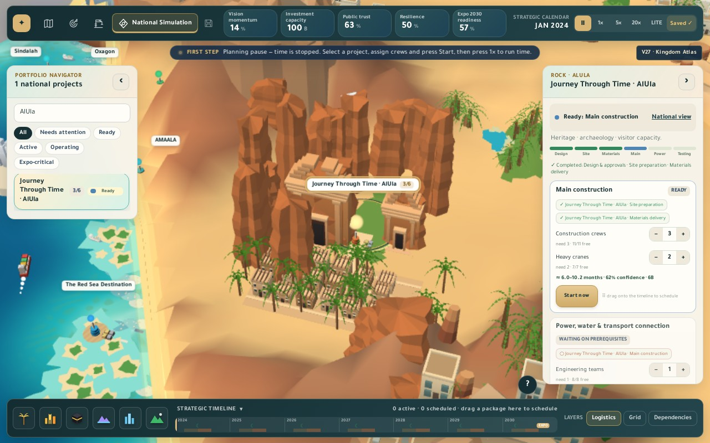
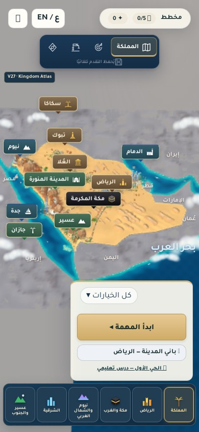

VISION NEXUS 2030 / ACTUAL GAMEPLAY RENDERSV27 · Kingdom Atlas
A country-first pass: connected districts, sculpted desert fields, rocky ranges, ports and regional planting. These are browser captures of the playable 3D world, not concept art.
Changes, validation and limits · Open game (serve this folder over HTTP)
Country view
The national view is slightly wider in V27 to keep the southern border in frame. Both captures use 1280 × 800, High quality, fixed daytime and frozen decorative motion.

Before · V26
After · V27See the world at the identical camera position

V26
V27AlUla, through the real project navigator
The project selection and map label now frame the same heritage scene. Project stage and resource controls remain in the original National Simulation.

V27 · actual project selectionArabic phone layout

Phone viewport capture, not a physical-device benchmark